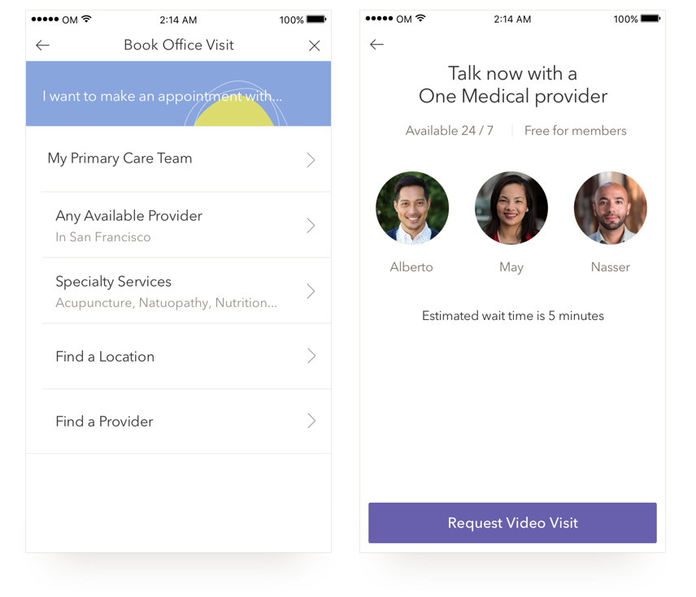

One Medical | Integrated Office Visits
This project was one of three projects I led that spun out of a week long design sprint that I facilitated and organized. The sprint helped us focus on the right part of the problem. From the sprint, we had three projects that spun out of it - two of which cannot be discussed publicly until they're in the hands of users. The third is this project.
Project Goal: Crafting an improved care delivery experience and tying the virtual and office experiences
My Responsibilities: Research, information architecture, prototype, visual & UI design, product definition, interaction design
Platforms I designed for: iOS and Android
Success: Within 2 weeks of launching, 46% of users were requesting virtual care when presented with the alternate office visits booking flow screen.
Intro
In working with the Data Team, we found that a significant portion of Office Visits were being booked by patients that could get their issue treated virtually. However, we had the additional challenge of designing with existing mental models in mind, and for many patients, that meant getting care in an office. One way to solve this is to tackle the problem upstream - before a user even selects the option to book an office visit. The other way to solve this, which is what we've done in Integrated Office Visits, is to meet the user where they are and gently guide them towards receiving care virtually.
Reorganizing Information & Data-informed Design
I broke down the information architecture of the existing flow, and remapped it so we could start guiding users towards virtual care for acute issues. I worked closely with our Engineers and the Data Team in understanding tradeoffs in scope and feasibility with a few options for capturing the visit reason (ex: structured data vs unstructured data, etc etc). Using their feedback and insights, I created a few options and spent 2 days going into the One Medical clinic next door to HQ for quick guerrilla usability testing on a mobile device as well as paper prototyping with patients in the waiting room. Each time we had enough feedback, I would hop back into the office, iterate on the mocks, then pop back into the One Medical clinic for more testing. Everything from variations in layout, to icon, to copy was tested. Here's a screenshot of a small sample of the Invision prototypes created for this:
Fast Feedback & Research Loops in UI Design Process
With each iteration and user testing, we validated core assumptions, but were also pleasantly surprised when they were invalidated as we learned new things. This quick feedback loop also armed us with information when managing stakeholder desires. Here is a prototype of the final deliverable:
I designed a UI where the two most common reasons requiring an office visit and the top 5 reasons a patient comes in when their issue could be treated virtually are presented as structured data, and an "other" field for unstructured data. Within two weeks of this feature rolling out, 46% of users selecting one of the 5 visit reasons that could be treated virtually, were requesting a video visit. This trend continued to hold.
Depending on what the user selects, they will either continue on to booking an office visit, or they will get dropped into the Video Visits experience. Here are screens for both of those flows:
